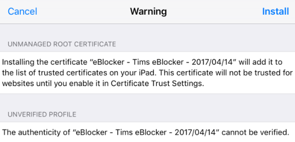
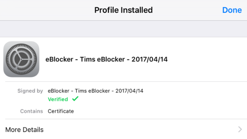

Note: This page has moved to https://eblocker.org/docs/how-to-add-the-eblocker-certificate-in-ios
Deutsch | English
eBlocker Help > FAQs > HTTPS function (SSL/HTTPS)
How to add the eBlocker certificate in iOS.
With just a few steps you have stored the certificate. Please use the iOS Safari browser.
Open the eBlocker HTTPS configuration page, or the eBlocker Dashboard.
On the HTTPS configuration page, click the START HTTPS Wizard button, or on the eBlocker Dashboard in the HTTPS card, click the START HTTPS Wizard link.
The wizard will show you step by step how to store the eBlocker certificate in iOS.
Alternatively, you can store the eBlocker certificate without the wizard.
- Click on the CERTIFICATE tab on the HTTPS configuration page.
- Now click on the DOWNLOAD button.
- iOS will ask you if this web page is allowed to download a configuration profile. Click on ALLOW in this dialog.
- Now open the iOS settings.
- Click on the GENERAL menu on the left and on PROFILE on the right.
- Click on the eBlocker configuration profile.
- Click on "Install".

- In the following dialog click on "Install" again.

- Confirm by clicking on "Install" for the last time again.

- The eBlocker certificate has now been added in iOS.

Starting with the iOS version 10.3 the added eBlocker certificate has to be activated again.
- Open iOS Settings and navigate to "General" > "About" > "Certificate Trust Settings".
- There you will find the previously added eBlocker certificate that you can now activate.